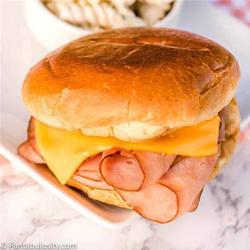
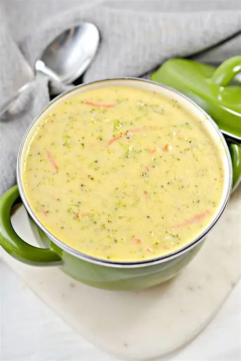

Dinner
Dinner is the best meal ALL OF THE TIME.
I mean sure, it takes more time to prepare, but it's always worth it.
- Some of my favorites are:
- Chicken Parmesan noodles
- Warm sandwiches
- soupppp :D
 
Dinner
Dinner is the best meal ALL OF THE TIME.
I mean sure, it takes more time to prepare, but it's always worth it.